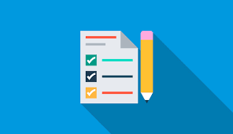

<ion-header>
  <ion-navbar color="primary">
    <button ion-button icon-only menuToggle>
      <ion-icon name="menu"></ion-icon>
    </button>
    <ion-buttons end>
      <button (click)="salir()" ion-button icon-end>
        Salir
      </button>
    </ion-buttons>

    <ion-title>
      Inventarios
    </ion-title>

  </ion-navbar>
</ion-header>

<ion-content class="fondo">
  <ion-grid [ngClass]="{'normal':!deslizar,'cabeceramenu':deslizar}">
    <ion-row style="height: 100%;">
      <ion-col>
        <label style=" color: #ffe5e5;
          font-size: larger;
          /* font-family: -webkit-body; */
          /* font-stretch: unset; */
          font-weight: lighter;
          font: icon;
          font-weight: bold;
          position: absolute;
    bottom: 20px;">Inventario actual</label>
      </ion-col>
    </ion-row>
  </ion-grid>
  <h3 style="text-align: center;
  margin-top: -25px;
  border-top-left-radius: 60px;
  border-top-right-radius: 60px;
  background:  #f3f3f3;
height: 30px;" ></h3>
  
  <ion-refresher (ionRefresh)="actualizando($event)" >
      <ion-refresher-content></ion-refresher-content>
  </ion-refresher>
  <ion-list> 
        <ion-searchbar placeholder="Buscar" (ionInput)="getItems($event)" [(ngModel)]="letras"></ion-searchbar>

    <ion-item-sliding [ngClass] = "i.clase" *ngFor="let i of arreglo" >
      <ion-item >
        <ion-avatar item-start>
          
        </ion-avatar>
      Descripcion:<p><strong>{{i.descripcion}}</strong></p>

      </ion-item>
          <ion-item-options side="right">
              <button color="success" ion-button (click)="desglose(i)">
                  <ion-icon name="clipboard"></ion-icon>Historial
                </button>
            <button color="danger" (click) = "eliminar(i)" ion-button>
              <ion-icon name="trash"></ion-icon>Eliminar
            </button>
          </ion-item-options>
        </ion-item-sliding>
  </ion-list>


  
</ion-content>

<ion-footer>
    <ion-toolbar color="gris" style="text-align: center">
      <button (click) = "agregar(fab);" ion-button icon-only color="light" style="width: 80%;">
        Agregar
      </button>
    </ion-toolbar>
  </ion-footer>